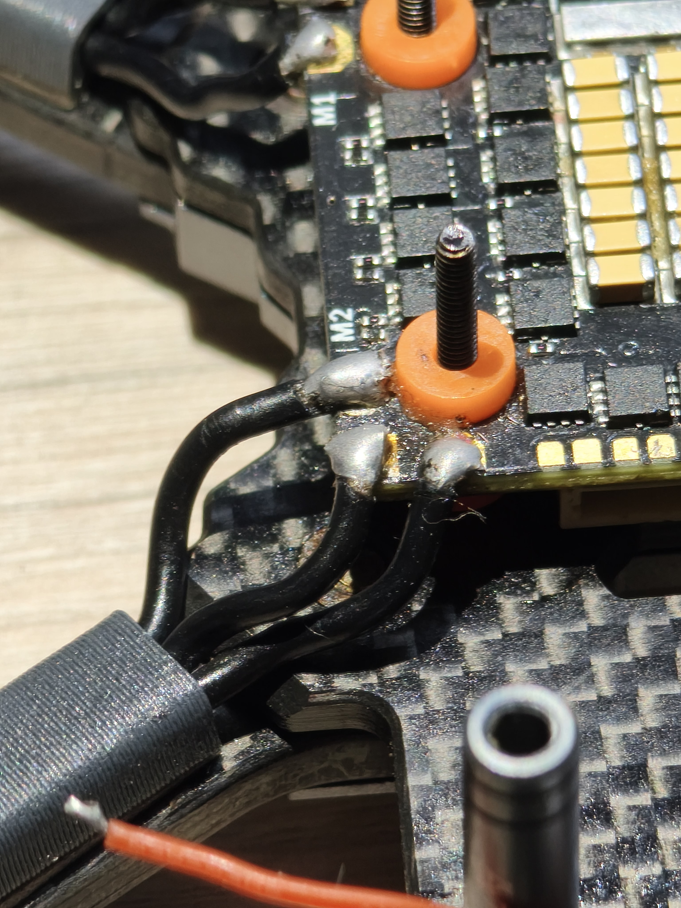
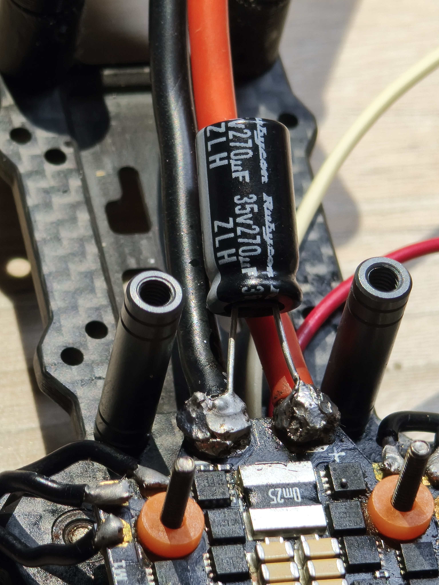

El Stack Argus Mini presenta una configuración compacta de 20×20 mm. El orden de montaje
de abajo hacia arriba es:
📌 Tuerca de seguridad M2/M3
▲
💻 FC Argus Mini F7 — Controladora de Vuelo
│ Arnés de datos SH1.0 8P
〰️ Dampers de Silicona (amortiguación)
│
─────── Separador de Nylon 5–6 mm ───────
│
⚡ ESC Argus 55A AM32 — Variador
│
〰️ Dampers / Separador base
▼
🏗️ Placa Inferior de Carbono — Chasis Manta 3.6"
▼
📌 Perno de Montaje M2/M3
Soldadura de Cables de Fase de Motores
- Recortar los cables de los motores a la longitud exacta para alcanzar los pads del
ESC.
- Pelar 1.5 mm del aislante, pre-estañar los terminales con fundente.
- Soldar a los pads marcados como M1, M2, M3 y M4 del ESC.
- No alteres el orden de los cables de fase. El sentido de rotación se configura
después por software en AM32.
Integración del Condensador
⚡
Soldar el condensador electrolítico (1000µF, 35V) en paralelo sobre los pads de batería
del ESC. Respetar polaridad (franja gris = pin negativo). Mantener las patas al mínimo de longitud.

🔧
Soldadura de cables de fase de motores en el ESC
assets/images/esc-soldadura-motores.jpg '">
Cables de fase de los 4 motores soldados en el ESC

⚡
Condensador electrolítico soldado en paralelo en los pads de batería del ESC
assets/images/condensador-esc.jpg '">
Condensador 1000µF / 35V soldado en los pads de batería